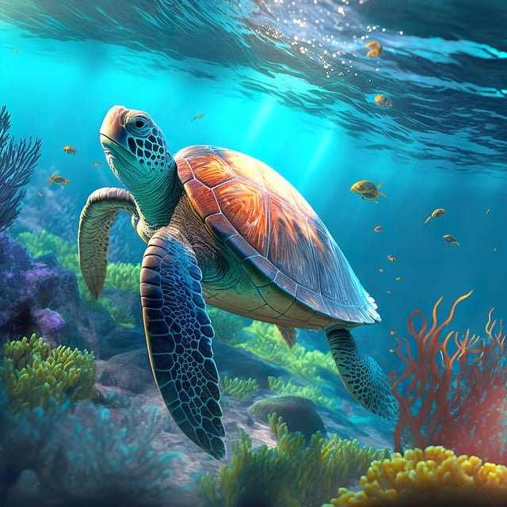
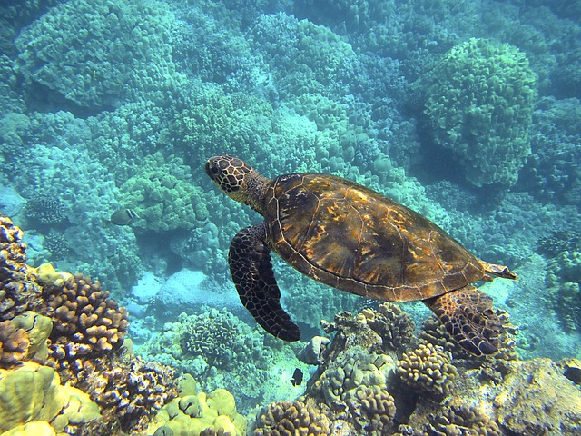

| 科學分類(綱) | |
| 爬行綱 | |
| 科學分類(科) | |
| 海龜總科 | |
| 高度 | |
| 背甲0.7 – 1.8米 | |
| 重量 | |
| 45 - 500公斤 | |

|
飲食 |
| 藻類、軟體動物等 | |
| 產卵期 | |
| 每年5 - 10月 | |
| 保育 | |
| 瀕危物種 |
海龜是爬行動物中的一種，分佈於世界各地的熱帶和亞熱帶海域。牠們的身體通常呈現流線型，頭部與四肢退化， 外殼為軟骨質的龜甲。海龜是海洋食物鏈中重要的一環，牠們可以吃海草、海藻、水母、蝦、蟹等食物。 全球共有7種不同類型的海龜，包括：綠海龜、鱉龜、革龜、鱗龜、鰉龜、橢圓龜和皮革龜。
海龜在繁殖季節時會前往特定地點築巢產卵，一窩可產下上百隻的蛋。孵化後的小海龜必須迅速游到海中， 並且需要長時間的游泳和成長才能夠成為成熟的海龜。
海龜面臨著許多威脅，包括棲息地破壞、過度捕撈、海洋污染和氣候變化等。因此，全球各地的保育機構和 組織積極進行海龜的保護和研究工作，以確保這些美麗而重要的生物得以生存和繁衍。